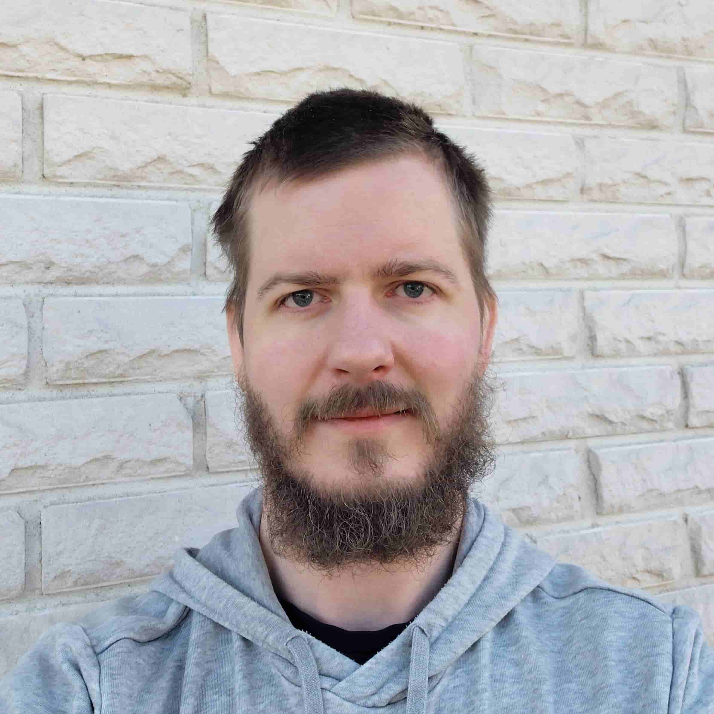

Yksityistä sparrausta yrittäjille, johtajille ja asiantuntijoille.
Aloitetaan keskusteluOlet rakentanut jotain. Sinulla on vastuu — yrityksestä, tiimistä, urasta. Olet tottunut ratkaisemaan ongelmat itse.
Mutta tätä et saa ratkaistua. Joka kerta kun ajattelet asian loppuun, palaat takaisin samaan pisteeseen. Samat argumentit. Samat epäilykset. Sama tunne siitä, että jotain olennaista jää näkemättä.
Et pääse ulos, koska et näe sitä, mikä sinut siellä pitää. Omat oletukset ovat vaikein nähdä — niitä ei huomaa oletuksiksi.
Lisäanalyysi ei auta. Lisää lukemista ei auta. Tarvitset jonkun ulkopuolisen, joka kuulee sinua ja kysyy ne kysymykset, joita et itse kysy.
90 minuuttia. Yksi aihe. Ei esitysmateriaalia, ei työkaluja.
Kerrot tilanteesi. Minä kuuntelen — en vain sanoja, vaan mitä niiden takana on.
Esitän kysymyksiä. En lohduta enkä neuvo. Toimin peilinä ja kaivurina — heijastan ajatuksesi takaisin sellaisina kuin ne ovat, ja kaivan esiin oletukset, joita et ole huomannut olevan oletuksia.
Useimmiten se oleellinen on jo tiedossa. Se on vain peitetty selittelyillä, oletuksilla tai pelolla.
Session lopussa sinulla on selkeämpi näkemys siitä, missä oikeasti ollaan, mitä oletat tilanteesta ja mitkä ajatukset sinua pitävät jumissa. Mitä sillä näkemyksellä teet, on sinun vastuullasi.
Kahden viikon päästä palataan 20 minuutin jatkotapaamisessa siihen, mitä on liikkunut.
Yksittäinen sparraussessio
990 € + ALV 25,5 %
90 min + 20 min jatkotapaaminen kahden viikon päästä.
Etänä.
Pidempi työskentely
Osan asiakkaiden kanssa työ jatkuu prosessina, jossa tavataan säännöllisesti muutaman kuukauden ajan. Siitä sovitaan keskustellen, kun tuntuu molemmista oikealta.

Riku Forsell
Ajattelun selkeyttäjä
Kun kuuntelen ihmistä, kuulen usein sen, mitä hän ei sano ääneen. Näen kehän, jossa hän pyörii — ennen kuin hän on itse sanonut sen loppuun. Juuri siinä työni alkaa.
Olen oppinut oman elämäni kautta, että kaikkein syvimmät solmut eivät ratkea tiedolla eivätkä menetelmillä. Ne ratkeavat silloin, kun joku auttaa näkemään ne. Se kokemus on työni perusta.
Olen yrittäjä vuodesta 2019. Tiedän, mitä on tehdä päätöksiä yksin, ilman varmuutta siitä, mihin ne johtavat. Tiedän, mitä on etsiä suuntaa silloinkin, kun se ei löydy. Siitä kokemuksesta ammennan, kun istun toisen yrittäjän tai johtajan kanssa hänen oman solmunsa äärellä.
Sparraus on 90 minuutin 1:1-keskustelu, jossa käymme läpi tilanteen, jossa olet jumissa. Se ei ole coachingia, mentorointia tai terapiaa. En opeta, en neuvo, en anna työkaluja. Tehtäväni on auttaa sinua näkemään omat ajatuksesi ja oletuksesi selvemmin.
Sparraus on tarkoitettu yrittäjille, johtajille ja asiantuntijoille, jotka ovat tottuneet ratkaisemaan ongelmat itse — mutta jokin tilanne on jäänyt pyörimään kehään. Päätös, jota et saa tehtyä. Suunta, joka ei kirkastu. Tunne siitä, että teet oikeita asioita vääristä syistä.
Coaching ja business-valmennus rakentavat prosessia, antavat työkaluja ja kulkevat rinnalla pidempään. Minä työskentelen yhden aiheen kanssa kerrallaan. En kuljeta sinua mihinkään suuntaan — en tiedä, mikä on sinulle oikein. Työni on tehdä ajatteluasi näkyväksi sinulle itsellesi.
Kirjoita minulle lyhyt viesti tilanteestasi. Et tarvitse täydellistä kuvausta — riittää, että tunnistat kehän, jossa olet jumissa. Vastaan itse, ja jos tuntuu molemmista oikealta, sovitaan ajankohta.
tai